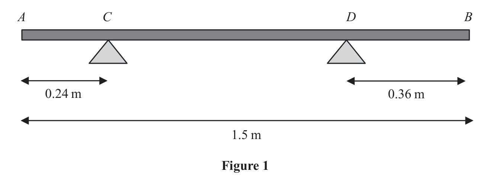

Packet Q5 / Official WME01 Q4 — moments and tilting
From the official paper. A branch AB, of length \(1.5\,\mathrm m\), rests horizontally in equilibrium on two supports.
The two supports are at the points C and D, where \(AC=0.24\,\mathrm m\) and \(DB=0.36\,\mathrm m\), as shown in Figure 1.

Official Pearson question-paper visual (prompt only; no answer annotations).
When a force of \(150\,\mathrm N\) is applied vertically upwards at B, the branch is on the point of tilting about C.
When a force of \(225\,\mathrm N\) is applied vertically downwards at B, the branch is on the point of tilting about D.
The branch is modelled as a non-uniform rod AB of weight \(W\) newtons.
The distance from the point C to the centre of mass of the rod is \(x\) metres.
Use the model to find (i) the value of \(W\) (ii) the value of \(x\) (8)
(Total for Question 4 is 8 marks)
Lesson status: COMPLETED WITH PROMPTING · Source class: official WME01/01 Jan 2023 (packet Q5)
Use the model to find (i) the value of \(W\) (ii) the value of \(x\) (8)
Teaching visual — both limiting scenarios.

Exam trigger and stopping point: when you see a supported branch about to tilt, identify the zero-reaction support first and take moments about the remaining contact; the requested result is completed, so no further lesson work is required.
Strategy and why. At the instant the branch is on the point of tilting about C, contact at D is just lost, so \(R_D=0\). Choose C as the pivot: the reaction at C passes through the pivot and has zero perpendicular distance, while the vanished reaction at D contributes nothing. This choice removes both unknown reactions and leaves only the branch’s weight and the applied \(150\ \mathrm N\) load.
Definition before substitution. The moment of a force about a point is force multiplied by its perpendicular distance from that point. In limiting rotational equilibrium, total clockwise moment equals total anticlockwise moment about the chosen pivot. The branch’s weight \(W\) acts \(x\) metres from C, so its moment has magnitude \(Wx\). The load is at the far end, \(1.5-0.24=1.26\ \mathrm m\) from C.
Keeping opposite senses on opposite sides avoids a fragile signed sum: \[Wx=150(1.5-0.24)=150(1.26)=189.\] Label this equation (A), because the second tilting scenario creates another equation in the same two unknowns. Units also check: both sides are moments in \(\mathrm{N\,m}\), even though the later answer for \(W\) will be in newtons.
The first limiting configuration uses C as pivot because the branch is about to tilt there; the reaction at D has reduced to zero. State the moment principle before numbers: in rotational equilibrium, total clockwise moment equals total anticlockwise moment, with each moment equal to force times perpendicular distance. The load at B is \(1.5-0.24=1.26\ \mathrm m\) from C, while the rod’s weight acts \(x\) from C. Therefore \(Wx=150(1.26)=189\ \mathrm{N\,m}\). This equation belongs to the one joint eight-mark task. A check with the final pair \(W=300\), \(x=0.63\) reproduces 189 exactly. Diagnostic trap: using AB’s full 1.5 metres as B’s arm would ignore that every moment distance must begin at C. Transfer cue: limiting tilt identifies the surviving contact as pivot and removes the opposite reaction.
Check-back. The distance \(1.26\) is positive and less than the full \(1.5\ \mathrm m\), as geometry requires. With the eventual values \(W=300\ \mathrm N\) and \(x=0.63\ \mathrm m\), the left side is \(300(0.63)=189\ \mathrm{N\,m}\), exactly matching the load moment.
Choose to retain equation (A), \(Wx=189\), exactly because it will combine with the second pivot equation and it also fixes the reference point from which \(x\) is measured. The official Figure 1 shows C between A and D and B beyond D, so the 150-newton upward force and rod weight create opposite turning effects about C. Including the reaction at C would add a zero-arm term and obscure the clean balance. The evidence-grounded diagnosis is the earlier overly long signed equation, not an invented pivot-B event. The stage endpoint is the exact relation \(Wx=189\ \mathrm{N\,m}\), not a premature value for either unknown, and both sides have units of newton metres. When checking a moments solution, redraw only the pivot, force lines and perpendicular arms; if every arm is measured from one point, sign and distance mistakes become visible before algebra.
Strategy and geometry. In the second limiting case the branch tilts about D, so \(R_C=0\), and taking moments about D also removes \(R_D\). The supports are separated by \(1.5-0.24-0.36=0.90\ \mathrm m\). Since the weight acts \(x\) from C, its distance from D is \(0.90-x\). This subtraction is the difficult transition: \(x\) is measured from C, not from D.
Moment definition before numbers. Using force times perpendicular distance and clockwise moments equal anticlockwise moments about D gives \[225(0.36)=(1.5-0.36-0.24-x)W.\] Therefore \[81=(0.90-x)W,\] which is equation (B). The positive distance condition requires \(0<x<0.90\), a useful domain check on any solution.
Now use the labelled equations strategically. Dividing (A) by (B) cancels the common nonzero weight: \[\frac{Wx}{W(0.90-x)}=\frac{189}{81}=\frac73,\qquad \frac{x}{0.90-x}=\frac73.\]
Cross-multiply without dropping the bracket: \[3x=7(0.90-x)=6.3-7x,\qquad 10x=6.3,\qquad x=0.63\ \mathrm m.\]
Back-substitute into (A), not into an unlabelled line: \[W=\frac{189}{0.63}=300\ \mathrm N.\] Division is efficient here because it removes \(W\) immediately; substitution from (A) would also work but creates a reciprocal expression earlier and offers more opportunity for arithmetic error.
In the second limiting configuration D is the pivot and the reaction at C is zero. The support spacing is \(CD=1.5-0.24-0.36=0.90\ \mathrm m\). Because \(x\) was defined from C, the weight’s arm from D is \(0.90-x\), the key change of origin. The moment equation is \(225(0.36)=W(0.90-x)\), or \(81=W(0.90-x)\). Combine it with \(Wx=189\): division eliminates \(W\), giving \(x/(0.90-x)=7/3\), hence \(x=0.63\ \mathrm m\) and \(W=300\ \mathrm N\). The domain \(0<x<0.90\) checks the geometry before substitution. Transfer recognition: whenever the limiting pivot changes, redraw the distance chain and convert coordinates measured from the old pivot before forming moments.
Check-back in both scenarios. The candidate lies inside the required interval: \(0<0.63<0.90\), so \(0.90-x=0.27\ \mathrm m\). Equation (A) gives \(300(0.63)=189\); equation (B) gives \(300(0.27)=81=225(0.36)\). Both limiting moment balances and units agree.
Both source commands belong to this same joint structure, so report them in order: (i) \(W=300\ \mathrm N\); (ii) \(x=0.63\ \mathrm m\). Check back in both limiting scenarios. Equation (A): \(300(0.63)=189\). Check equation (B): \(300(0.90-0.63)=300(0.27)=81=225(0.36)\). The positive distances confirm that the centre of mass lies between C and D. Writing \(x-0.90\) would create a negative physical arm and signals that the change of origin was reversed. Transfer cue: for two tilting cases, label each pivot equation, eliminate the shared unknown, enforce geometric bounds, and back-check both original moment balances.